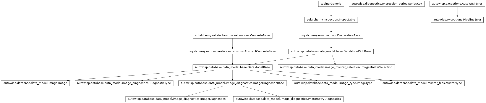
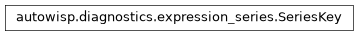

autowisp.diagnostics.expression_series module
Class Inheritance Diagram

Values for one series of images, read from the project database.
Tier 2 of the expression layer: it knows the project database and nothing
else. Above it, the browser interface adds Django and a way of editing the
library; below it, autowisp.diagnostics.expressions knows what an
expression means and has no database at all. This module is the join
between them – it turns a session, an image type and the channels and
photometries a series binds into the {name: {(channels, photometries):
array}} that tier 1 evaluates against.
Everything here is built on one canonical image list per session and image
type, ordered by Julian date, with NaN wherever a value is not
recorded. Alignment is then structural: index i is the same image in every
array, so two quantities need no join to be plotted against each other, and
an aggregate is taken over one population rather than over a mixture of
frame types.
The list deliberately does not depend on the channel, which is what makes reading one diagnostic in several of them cheap: the columns arrive side by side against the same images, so a quantity comparing channels is ordinary arithmetic rather than a join.
It does depend on the photometric references a series names. A diagnostic
fit_magnitudes produces depends on the reference an image was fit
against, so a series reading one is restricted to the images bound to one
reference in each channel it reads it in, and split_series() finds
which such populations a session holds.
A photref group is the one population not identified by a session: it is
given as its members, (image, channel) pairs, and
get_custom_group_values() reads and evaluates over those, one point per
member, with the same query and evaluation.
- class autowisp.diagnostics.expression_series.SeriesKey(session_id, image_type, channels, *, photometries=(), photrefs=None)[source]
Bases:
_SeriesKeyFields
What one series is: a population of images and a binding.
The image type is part of the key because a session holds frames of several types and a diagnostic rarely means the same thing across them – some are only defined for object frames, and one recorded for both would have its aggregates taken over a mixture, making
nanmedian(bg_center[0])a median of object and flat frames together.channelsholds one channel per parameter of what the series draws, in the order those parameters are numbered: one for an ordinary diagnostic, several where an expression compares channels, and none for a quantity over the time alone. After them come the quoted channels a diagnostic ofmagfit_diagnostic_names()is read in, if any, in the order the text first quotes them: they bind nothing, but need a reference like any other channel magfit is read in, and so a slot to hold it. Whatever turnschannelsinto bindings slices it from the front, by arity, and never reaches them.photometriesholds one photometry id per photometry parameter of what the series draws, in the same order – the axes’ parameters laid end to end – and is empty where nothing it draws is read per photometry. It is independent ofchannels: a photometry belongs to no channel slot, every image having every photometry in every channel.photrefsholds, per slot, thesingle_photrefmaster file the series’ images are bound to in that slot’s channel, restricting the population to the images fit against it there;Nonewhere the population is not restricted in that channel. A reference is a property of a channel, not of a slot – an image has one binding per channel – so slots on one channel carry the same one. A channel something reads a magfit diagnostic in must have one (seeget_diagnostic_values()), since its values then depend on the reference as well as on the image.Every function here takes one of these rather than the fields separately, so a caller cannot pair a channel with the wrong session by getting an argument order wrong.
- static __new__(cls, session_id, image_type, channels, *, photometries=(), photrefs=None)[source]
Build the key, coercing what arrives in the wrong shape.
__new__rather than a check further on because it has to coerce as well: bindings reach this from a JSON post as a list, and a list in that field makes the key unhashable, which is how it is used everywhere.A bare string for the channels is refused loudly because it fails silently and selectively:
channels="R"leaveschannels[0]reading"R"and joins to the same id, so a one-character channel behaves correctly, while"G1"becomes the two channelsGand1somewhere much later.photometries and photrefs are keyword-only: both are tuples of ids, so one passed in the other’s place would be accepted and read wrongly rather than refused.
Omitted, photrefs is
Nonein every slot, so a key built without it equals one spelling that out. Given, it must be as long as channels, and a slot leftNoneon a channel another slot has a reference for takes it: a producer filling only the slots that read magfit then builds the same key as one filling every slot on the channel.
- property channel
The one channel a whole series can be said to belong to, or
"".There is not really such a thing once a series can bind several – that is the point of
channels– but two things need one anyway, and neither is about the data: the frame a click on a point opens, and the colour the series is drawn in. Both take the first, for want of a better answer. A series binding no channel at all has none to give.
- property reference_pairs
The
(channel, photref)pairs restricting the population.One per distinct pair with a reference, sorted so that the joins built from them come out the same every time. A channel given two references contributes both, which between them select nothing.
- class autowisp.diagnostics.expression_series._SeriesKeyFields(session_id: int, image_type: str, channels: tuple, photometries: tuple, photrefs: tuple)[source]
Bases:
NamedTupleThe fields of a
SeriesKey, kept apart only to be checked.typing.NamedTupleprohibits__new__and__init__in a class body, so the check below cannot go there; deriving from this is what givesSeriesKeysomewhere to put it.
- autowisp.diagnostics.expression_series._as_arrays(rows)[source]
Return
(image_ids, jd_values)for rows starting(id, jd, …).
- autowisp.diagnostics.expression_series._check_references(series_key, needed)[source]
Refuse to read magfit diagnostics over images fit against unknown refs.
A magfit diagnostic depends on the reference an image was fit against as well as on the image, so read in a channel the key names no reference for, the population could mix images fit against several, and an aggregate over it – or a jump in a plot of it – would mean nothing. A reference on a channel nothing magfit reads is fine: it merely restricts the population.
- Raises:
PipelineError – If a channel needed reads a magfit diagnostic in has no reference in series_key.
- autowisp.diagnostics.expression_series._custom_group_bindings(quantities, expressions)[source]
Return
wantedforget_custom_group_values().Every slot is bound to
_own_channel, the stand-in for each member’s own channel.- Raises:
PipelineError – If a quantity takes more than one channel, or any photometry.
- autowisp.diagnostics.expression_series._diagnostic_values_query(population, names, bindings)[source]
Return the statement reading names in each of bindings.
Separate from running it so that what it asks the database for can be inspected without a database: the predicates below are what keep this affordable on an archive too large to scan, and they are this module’s to get right, unlike which index a particular server then chooses.
- Parameters:
population – Function restricting a query over
Imageto the images to read, as_in_series()does to a series’.names (list) – The
diagnostic_typenames to read.bindings (list) – The diagnostic bindings to read them in, one outer join each:
((channel,), ())onimage_diagnostics, and((channel,), (photometry,))onphotometry_diagnostics. A diagnostic takes one channel and at most one photometry, so there is nothing else a binding here can be.
- Returns:
The SQLAlchemy select, ordered by name and then canonically.
- autowisp.diagnostics.expression_series._in_series(query, series_key)[source]
Return query, over
Image, keeping only the images of one series.One session’s frames of one type, bound to the key’s references. The query must already select from
Image, which is what gets joined to its type.
- autowisp.diagnostics.expression_series._list_images(population, db_session)[source]
Return
(image_ids, jd_values)for a population, in canonical order.- Parameters:
population – Function restricting a query over
Imageto the images wanted, as_in_series()does to a series’.db_session – An active SQLAlchemy database session.
- autowisp.diagnostics.expression_series._normalize_photrefs(channels, photrefs)[source]
Return photrefs with every slot on a channel given its reference.
A slot left
Nonetakes the reference another slot on its channel has, where there is exactly one; a channel given two different ones is left alone, selecting nothing, as it would anyway.
- autowisp.diagnostics.expression_series._own_channel = '<own channel>'
The channel a member’s slot is bound to while its quantities are resolved: not a channel, but a stand-in for each member’s own, which the values are then read in. The angle brackets keep it from ever naming a real one.
- autowisp.diagnostics.expression_series._read_custom_group(members, needed, db_session)[source]
Return the values needed asks for, one entry per member.
The members’ images are read as any population is, in every binding needed asks for, one on
_own_channelin every channel a member has; each member then takes the column of its own channel wherever needed asks for_own_channel.- Returns:
- dict:
{name: {(channels, photometries): array}}, as get_diagnostic_values()returns for a series.
list: The members the arrays run over, in canonical order.
- dict:
- Return type:
- autowisp.diagnostics.expression_series._read_diagnostics(population, names, bindings, db_session)[source]
Return names in each of bindings for a population, NaN-padded.
The reading
get_diagnostic_values()describes, for any population: one query, read back as a rectangle.- Parameters:
population – Function restricting a query over
Imageto the images to read, as_in_series()does to a series’.names (list) – The
diagnostic_typenames to read. May be empty, leaving only the images to list.bindings (list) – The diagnostic bindings to read every one of them in, as
_diagnostic_values_query()takes them.db_session – An active SQLAlchemy database session.
- Returns:
- dict:
{name: {binding: array}}for every name and binding asked for, over the images in canonical order.
numpy.ndarray: The image ids, in canonical order.
numpy.ndarray: Their Julian dates.
- dict:
- Return type:
- autowisp.diagnostics.expression_series._unreferenced_magfit_channels(series_key, needed)[source]
Return the channels needed reads magfit in with no reference.
- autowisp.diagnostics.expression_series.count_unbound_images(series_key, wanted, expressions, db_session)[source]
Count the images
split_series()leaves out for want of a binding.Those with a magfit diagnostic recorded in a channel wanted reads one in and series_key names no reference for, but no photref bound there: magfit-ed, so their values depend on a reference, with nothing saying which. Only processing from before every magfit-ed image was bound leaves any. Counted rather than listed, for the engine to log and the browser interface to show.
- Parameters:
series_key (SeriesKey) – The series, as given to
split_series().wanted (dict) –
{quantity: set of (channels, photometries)}.expressions (dict) – The library,
{name: expression}.db_session – An active SQLAlchemy database session.
- Returns:
- The number of images, each counted once however many
channels it lacks a binding in.
- Return type:
- autowisp.diagnostics.expression_series.get_canonical_images(series_key, db_session)[source]
Return
(image_ids, jd_values)for one session and image type, by JD.Every array built for this series is padded onto this list, so index i is the same image in each of them and alignment needs no join.
The channels of series_key are deliberately not used – the list is the same for every channel – but the image type is: frames of different types are different populations, and mixing them would put a flat frame and an object frame in one array for an aggregate to average over. Its references are used too, for the same reason: images fit against different references are different populations of magfit values.
- autowisp.diagnostics.expression_series.get_custom_group_values(members, quantities, expressions, db_session)[source]
Return quantities over an explicit list of members, one point each.
The photref-group scope. A photref group – images sharing configuration conditions and
single_photrefmust_matchvalues, possibly across sessions – is found only by the engine’s condition grouping, so it arrives as its members rather than as a key. A member is an image in one channel: under amust_matchsuch asCLRCHNL[0].upper(), one image is a member inG0and again inG1.Each quantity takes at most one channel, bound per member to that member’s own, so
nanrank(s_center[0])ranks every member’ss_centerin its own channel against all the others’. A quoted channel is read in that channel for every member. No reference is required, as it is of a series: the group is being chosen one.- Parameters:
members –
(image_id, channel)pairs, in any order.quantities – The names of the diagnostics and expressions to evaluate, each taking at most one channel.
expressions (dict) – The library,
{name: expression}.db_session – An active SQLAlchemy database session.
- Returns:
dict:
{quantity: array}, one entry per member.- list: The members the arrays run over, as
(image_id, channel)tuples ordered by Julian date, then image id, then channel. A member whose image has no Julian date is left out, as it is from every series.
- Return type:
- Raises:
PipelineError – If a quantity takes more than one channel, or as
get_quantity_values()does.
- autowisp.diagnostics.expression_series.get_diagnostic_values(series_key, needed, db_session)[source]
Return the wanted diagnostics for one series, NaN-padded and aligned.
One query, and nothing to match up afterwards. A cross join pairs every wanted diagnostic with every image of the series, and an outer join attaches the values, leaving
NULLwhere nothing was recorded – so the padding is what the database returns rather than something assembled from it. The unique indices make that sound: on(image_id, channel, diagnostic_id)for a diagnostic recorded per image, and on(image_id, channel, photometry_id, diagnostic_id)for one recorded per photometry. No image contributes two rows for one diagnostic in one binding, so the result is exactly one row per image per name.Several bindings at once, still one query. An expression comparing channels or photometries needs the same diagnostic read more than once, so there is one outer join per distinct binding, each with its channel, and its photometry where it has one, pinned. That keeps the result a rectangle – the joins only widen it, adding a value column per binding rather than rows – and keeps every probe on a unique index, whose columns are exactly what is being pinned.
Being a rectangle is what lets the values become arrays in one step: a column is read out whole and reshaped into one row per name, rather than accumulated name by name. The blocks’ names are taken from the rows, in the order they arrive, rather than from a sorted list of the names asked for, so nothing depends on the database’s collation ordering strings the way Python does.
The image ids come back alongside, because the same query already carries them and a caller that needs them should not have to ask again – nor risk a second query disagreeing about the order of images sharing a
jd. The dates are not returned separately:time_quantityis asked for by name like anything else, and arrives in the dictionary.- Parameters:
series_key (SeriesKey) – The series to read the values of. Its channels are not consulted; what to read in is needed, since a quantity may be bound to channels other than the series’ own.
needed (dict) –
{name: set of (channels, photometries)}, fromget_needed_values(). May includetime_quantityat((), ()), which is taken from the image row rather than from a diagnostics table.db_session – An active SQLAlchemy database session.
- Returns:
- dict:
{name: {(channels, photometries): array}}, keyed exactly as needed asked, every array the length of the canonical image list and
NaNwhere nothing is recorded. A name nodiagnostic_typehas is allNaN.
numpy.ndarray: The image ids, in canonical order.
- dict:
- Return type:
- Raises:
PipelineError – If needed reads a magfit diagnostic in a channel series_key names no reference for.
- autowisp.diagnostics.expression_series.get_magfit_channels(needed)[source]
Return the channels needed reads a magfit diagnostic in, sorted.
Each needs a slot in the
SeriesKeyto hold its reference, so whatever builds a key asks here which those are.- Parameters:
needed (dict) –
{name: set of (channels, photometries)}, fromget_needed_values(), which has already resolved slots, quoted channels and library expressions alike, so a channel is here whichever way it is read.
- autowisp.diagnostics.expression_series.get_quantity_values(series_key, wanted, expressions, db_session)[source]
Return the quantities of one series as the table bound them.
wanted holds both axes rather than one, because resolving them one at a time would waste the two properties this arrangement exists for: the diagnostics both axes read are fetched in one query for their union, and an instantiation the two share is evaluated once.
The image ids come from the same query as the values, so no two results have to agree about the order of images sharing a Julian date.
- Parameters:
series_key (SeriesKey) – The series to read the values of.
wanted (dict) –
{quantity: set of (channels, photometries)}, each holding one channel per channel parameter of that quantity and one photometry id per photometry parameter. A set of them because the two axes may be one quantity read in two channels, which is how a diagnostic is compared between them.expressions (dict) – The library,
{name: expression}.db_session – An active SQLAlchemy database session.
- Returns:
- dict:
{quantity: {(channels, photometries): array}}, all of the same length, and unmasked – dropping the non-finite entries is the caller’s business, since the mask has to be taken across both axes at once and the image ids masked with it.
numpy.ndarray: The image ids that length runs over.
- dict:
- Return type:
- Raises:
PipelineError – If a quantity names nothing, if the expressions reference each other in a cycle, if a binding is the wrong length for what it binds, or if a magfit diagnostic is read in a channel series_key names no reference for.
- autowisp.diagnostics.expression_series.photref_binding(binding, channel)[source]
Return the ON terms matching binding to an image’s photref row.
Everything but the master file, which is what the callers vary: pinned to one, or read out to see which it is. All three columns of the primary key are pinned, so each probe is one index lookup. Public because the image counts of
autowisp.diagnostics.image_countsjoin the same way.- Parameters:
binding – An alias of
ImageMasterSelection.channel – The channel to match it in: a name, or a column holding one, such as the channel of the diagnostic row being read.
- autowisp.diagnostics.expression_series.restrict_to_references(query, reference_pairs)[source]
Return query, over
Image, keeping images bound to the references.One inner join per pair, so an image stays only if it was fit against every one of them in its channel; no pairs, and the query comes back unchanged. Public because the image counts of
autowisp.diagnostics.image_countsrestrict the same way.- Parameters:
query – A select over
Image.reference_pairs –
(channel, photref)pairs, the photref aMasterFileid, asSeriesKey.reference_pairsgives them for a series.
- autowisp.diagnostics.expression_series.split_series(series_key, wanted, expressions, db_session)[source]
Return the fit populations of a series: one key per reference combination.
A session may have been fit against several photometric references – split by the separation limit, say – and a quantity reading a magfit diagnostic means something only within one of them. This finds which references the series’ images were actually bound to, in every channel wanted reads a magfit diagnostic in, and returns one key per combination that occurs, each restricted to the images having it.
If the first 200 images of a session were fit against A and the rest against B,
photometry_mag_offset[0]bound toRsplits into keys withphotrefs=(A_R,)and(B_R,). Read inRandBit normally splits into(A_R, A_B)and(B_R, B_B): only combinations some image has, never every pairing of the references found per channel.References the key already names are kept, so the split happens within the images bound to them. Each slot on a split channel gets that channel’s reference.
An image bound in none of those channels – only possible from processing before every magfit-ed image was bound – is in none of the keys;
count_unbound_images()says how many there are.- Parameters:
series_key (SeriesKey) – The series to split. It needs a slot for every channel a magfit diagnostic is read in, those read only in quoted channels included, since that is where the reference goes.
wanted (dict) –
{quantity: set of (channels, photometries)}, as forget_quantity_values().expressions (dict) – The library,
{name: expression}.db_session – An active SQLAlchemy database session.
- Returns:
SeriesKeyper combination present, ordered by thereferences. series_key alone where there is nothing to split by.
- Return type:
- Raises:
PipelineError – If a channel wanted reads a magfit diagnostic in has no slot in series_key, or as
get_needed_values()does.